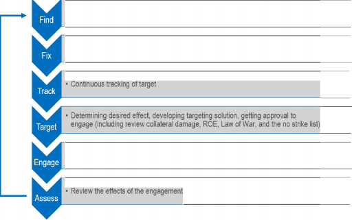

Focus on
Technology and Application of Autonomous Weapons
"Focus on" Report No. 1 August 2017
International Panel on the Regulation of Autonomous Weapons (iPRAW) coordinated by:
Stiftung Wissenschaft und Politik - German Institute for International and Security Affairs Ludwigkirchplatz 3-4
10179 Berlin, Germany
August 2017
This project is financially supported by the German Federal Foreign Office.
ABOUTIPRAW
Setting and Objectives: The International Panel on the Regulation of Autonomous Weapons (iPRAW) was founded in March 2017 and is an independent group of experts from different states and scientific backgrounds. It will work until the end of 2018.
The mission of iPRAW is to independently inform the Group of Governmental Experts (GGE) in the process of a possible need for future regulation of LAWS (Lethal Autonomous Weapon Systems) in the framework of the United Nations CCW (Convention on Certain Conventional Weapons). This includes, but is not limited to, the military, technical , legal, and ethical basis for practical and achievable policy initiatives. The mandate of the CCW's open-ended GGE on LAWS will guide the work of iPRAW.
iPRAW seeks to prepare, support, and foster a frank and productive exchange among participants, culminating in perspectives on working definitions and recommendations on a potential regulation of LAWS for the CCW GGE.
The panel is independent from the GGE and does not function in any official capacity in that regard. The views and findings of iPRAW do not reflect the official government positions of the panel members.
Scope: The panel acknowledges that LAWS may pose a number of considerable legal, ethical and operational challenges and that they might change the security environment in a fundamental way. The full potential of these weapon systems is yet unknown and a mutually agreed definition does not exist.
In order to support the CCW GGE process , iPRAW will work on how LAWS should be defined as well as suggest possible approaches to regulation. Its sessions will include the following
State of technology and operations as well as existing definitions of LAWS
Computational systems within the scope of LAWS
Autonomy and human control
Ethics, norms and public perception
Risks and opportunities
International humanitarian law and other fields of law and will give final recommendations to the CCW process.
Participants: iPRAW is co-organized by the Stiftung Wissenschaft und Politik - The German Institute for International and Security Affairs (SWP) and the Johns Hopkins University Applied Physics Laboratory (JHU APL). The participants have been selected with consideration to a variety of professional and regional backgrounds. The panel represents the diversity of views on the topic. Its members have backgrounds in natural science, engineering, law, ethics, political science, and military operational analysis. The German Federal Foreign Office financially supports the panel.
Procedure: The participants commit themselves to actively participate in and contribute to all meetings and the scientific dialogue in between meetings. The panel will meet seven times in two years, starting in March 2017. Each meeting will take two and a half days and will be hosted by SWP in Berlin.
Papers with agreed upon recommendations on relevant issues will be drafted and published via the project's website (www.ipraw.org) in between meetings.
Communication and Publication: The participants will discuss under the Chatham House Rule: Participants are free to use the information received, but neither the identity nor the affiliation of the speaker(s), nor that of any other participant, may be revealed. As a matter of confidentiality, photographs, video or audio recordings as well as all kinds of activities on social media are not allowed during our meetings.
Content and results of the panel will be published. iPRAW will strive to reach consensus on its recommendations to be reflected in the panel's publications. Media inquiries on official positions of the panel should be directed to the steering group. Apart from that, the members are free to talk about their personal views on participation and the topics of the panel.
Learn more about iPRAW and its research topics on www.ipraw.org. Please direct your questions and remarks about the project to mail@ipra w.org.
Figure 1: Dynamic Targeting Cycle 12
Table 1. Defining Elements of the Scenarios 14
Table (Annex) 1: U.S. Targeting Cycle 23
Focus ON
TECHNOLOGY AND APPLICATION OF AUTONOMOUS WEAPONS
The International Panel on the Regulation of Autonomous Weapons (iPRAW) is an independent, interdisciplinary group of scientists working on the issue of military robotics in general, and lethal autonomous weapon systems (LAWS) specifically. It aims at supporting the current debate within the UN Convention on Certain Conventional Weapons (CCW) with scientifically grounded information and recommendations - looking at the potential regulation of LAWS from different angles. Defining LAWS is a critical element of the CCW debate and as such a major component of iPRAW's mission.
iPRAW will publish six reports covering different perspectives relevant to a potential regulation of LAWS. The first one focuses on the technological basics and the possible military use of LAWS. Subsequent reports will look at artificial intelligence and machine learning, the concept of autonomy in relation to human control, the ethical dimension, risks and opportunities of LAWS, and legal questions. Every iPRAW report will include recommendations for a possible definition and regulation of LAWS from their particular perspective, culminating in final recommendations by the end of 2018.
This first report reflects iPRAW's meeting in June 2017 on "The State of Technology and Military Operations (regarding LAWS)". It represents initial findings and should be regarded as such. Some views might change or become more refined over the course of the project.
The report looks at the implications of technological capabilities and limitations for the use of autonomous weapon systems. From that we derive elements that would be important for a definition of LAWS.
The report is based on facilitated scenario based discussions to examine the enduring characteristics of mission, environment, domain, physical form, and other factors regarding the legal, ethical, military, and technical issues with LAWS. These discussions led to several observations that went beyond the respective scenarios and are relevant to the CCW discussion as a whole. First of all, the context of use appears to be a crucial factor for the overall evaluation of autonomy in weapon systems. While a use restricted to certain temporal and geographical "boxes"
appears to be potentially safe(r), there are downsides to this approach as well. The idea of "boxed autonomy" most prominently figured into scenarios with restricted communication in secluded environments (e.g. the deep sea) and/or due to stealth requirements. Here, boxed autonomy has operational benefits. But it also risks to negatively impact the reliability and predictability of LAWS, which in turn carries implications for the proper implementation of international humanitarian law. This notion applies to single weapon systems, but it is especially relevant for so-called systems of systems.
Thus, the panel's initial conclusion is that a potential definition and a regulation of LAWS should consider multiple aspects: The contexts of application, the relationship to human command authorities, and the limitations to algorithmic evolution are all areas for further focus and analysis in this debate.
Context of Application: Although autonomous systems could seem acceptable within very limited and structured environmental or mission conditions (operational boxes), they still raise various concerns, some of which are mentioned above. If a regulation is supposed to take this into account, it should not only rely on addressing the context of use, but include other parameters like those mentioned below as well.
Command, Control & Communications: The complex of command and control as well as communication holds a multitude of aspects relevant for a regulation of LAWS: The specificity of targeting guidance or orders that must be conveyed by a human to a system of systems collectively capable of lethal engagements, the monitoring of mission execution, and the authority and control over mission. Two way communication is likely to be a crucial aspect, and it is the quality and frequency of that communication that need to be examined further. This aspect will represent one issue of discussions in iPRAW's fourth report on the concepts of autonomy and human control in March 2018.
Referencing the targeting cycle, a broader view beyond the final stages of select and engage can be helpful, as all steps towards lethal engagements could be potentially done by an autonomous system (algorithm). A brief analysis shows that a command to engage a target is already predefined by various decisions taken beforehand. With regard to the relation of human and machine decisions, the model illustrates a certain path dependency of decisions following from specifications of technology and from steps in the targeting cycle. For example, the human-machine interaction in the find and fix stages can be relevant to the assessment of target and engage.
Time in the Decision-Making Process: Time is a specific parameter of an operational box and appears to be an important factor for the assessment of LAWS within the targeting cycle. While, in some cases, a longer period of observation of or engagement with the adversary can increase the situational awareness in a mission, the increase of autonomous operational time comes at a price: a greater uncertainty of the mission environment and less predictability of the system's behavior. Therefore an often assumed advantage of LAWS (or more general unmanned systems in this case) might turn into a problem in the absence of a human to make sense of the collected data. A regulation of LAWS should consider this aspect and carefully examine situational awareness and the human role in the targeting cycle.
Legal Assessments: Machines may never be able to make legal assessments of proportionality and distinction; instead, a human decision might always be necessary. A regulation addressing this challenge might have to prohibit machine actions that require such legal considerations without a human evaluation of the situation at hand.
Evolving Algorithms: The use of evolving algorithms could bring considerable military advantages, but the risks deriving from the decreasing predictability might outweigh the benefits. Therefore, a definition of LAWS should address this aspect; a regulation should explicitly be directed at self-evolving systems for military use. iPRAW's third report (to be published in fall 2017) will focus on the issue of computational systems within the scope of LAWS. We strive to present some more differentiated conclusions on evolving algorithms then.
Future iPRAW reports will continue to examine LAWS along the lines of these considerations.
Focus ON
TECHNOLOGY AND APPLICATION OF AUTONOMOUS WEAPONS
The International Panel on the Regulation of Autonomous Weapons (iPRAW) is an independent, interdisciplinary group of scientists working on the issue of robotics in general, and lethal autonomous weapon systems (LAWS) specifically. It aims at supporting the current debate within the UN Convention on Certain Conventional Weapons (CCW) with scientifically grounded information and recommendations, looking at the potential regulation of LAWS from different angles. The various backgrounds and specializations of the iPRAW participants allow for different perspectives on military advantages, technological boundaries, and human machine interaction. iPRAW strives to present its findings in consensus, but we will highlight the major threads of debate among the members if necessary.
iPRAW meets every three months over the course of 2017/18 and will publish six reports covering different perspectives relevant to a potential regulation of LAWS. The first one focuses on the technological basics and the possible military use of LAWS. Subsequent reports will look at artificial intelligence and machine learning, the concept of autonomy in relation to human control, the ethical dimension, risks and opportunities of LAWS, and legal questions. All reports will include recommendations for a possible definition and regulation of LAWS from their respective perspective, culminating in final recommendations by the end of 2018. This first report reflects iPRAW's meeting in June 2017 on "The State of Technology and Military Operations (regarding LAWS)". It presents initial findings and should be regarded as such. Some views might change or become more refined over the course of the project.
This report looks at the implications of technological capabilities and limitations for the use of autonomous weapon systems. From that we derive elements that are important for a definition of LAWS.
The upcoming section 2 focuses on the philosophical approaches, technological and practical military decision-making aspects of defining LAWS. In this section we explain the range of views among different parties on how to define LAWS, the role that the underlying enabling technology could play in potential definitions along with a potential approach using military command and control paradigms. The various parties involved with the current debate about defining LAWS have three related, but different approaches. This report considers all of these as well as the role, which
sensor, processor, and actuator technology could play regarding definitions. Lastly, we examine the ways the military makes lethal decisions at the moment and explore how that could be a basis for a future definition.
Section 3 explores possible applications of LAWS based on the panel's facilitated discussions and scenario-based explorations of the operational needs as well as legal, ethical, and technological challenges involved with using LAWS. These scenarios examine multiple environments, missions, instantiations of LAWS, and levels of warfare.
The observations derived from this exercise inform iPRAW's thinking on a possible definition of LAWS and the potential regulation of these systems. The concluding section 4 presents iPRAW's initial recommendations on that issue.
Focus on
Technology and Application of Autonomous Weapons
To reconstruct the current state of the definitional debate surrounding LAWS, the on the-record statements on the issue by States Parties to the CCW constitute a good entry point. Their ideas and expectations are the baseline for iPRAW's work on the definition and options for regulation. The next step is a look at the enabling technologies that create autonomous functions in machines, because they define the options and limits for their (military) use. Finally, we will examine the impact of autonomous functions on the military decision-making process. The application of LAWS, which is the context of domain and operation, will be explored in Chapter 3.
APPROACHES TOWARDS LAWS WITHIN THE CCW DEBATE
A major element in the CCW debate about LAWS is the question of if and how LAWS can be defined at all. The attitude towards the possibility or necessity of a definition varies wildly. In that regard, several pathways are presented. While some States Parties do not deem it necessary or even possible to formulate a definition of autonomy and LAWS, others urge for a clear definition as soon as possible. They call for a definition to become part of a CCW protocol (also referred to as "legally binding" definition). A third fraction seems to be skeptical towards a legally binding definition, but is in favor of a working definition for the purpose of negotiations.
Those who are in favor of a definition of some sort are again divided into three groups (at least judging from their CCW statements). The concept of "critical functions" as introduced by the ICRC1 (and the United States)2 has so far made the strongest impact. This approach solely focuses on functions within the targeting cycle directly linked to kill decision and implementation, which means targeting a subject and engaging it with a use of force. The concept of meaningful human control is not necessarily a part of, but often linked to it. According to that notion, a human operator must be able to make an informed decision about actions by LAWS,
See ICRC, Report of the ICRC Expert Meeting on Autonomous Weapon Systems: Technical, Military, Legal and Humanitarian Aspects, May 2014.
2 See United States DoD, OoO Directive: Autonomy in Weapon Systems (No. 3000.09),
November 2012.
especially regarding critical functions. Other approaches take a broader view on autonomy by trying to separate it from automation, for example. The third strand of the debate changes the perspective by proposing a compliance-based approach (as opposed to a definition of what should be prohibited). This approach seeks to define the capability requirements a LAWS must fulfill in order to be a legal weapon under international law (rather than defining a system to be then declared illegal). Connected to this are, for example, national as well as Article 36 (Geneva Convention Add. Prot. I) weapon reviews.
Different States Parties interpret and advocate for these definitions in several ways. The debate is additionally structured around the following positions: LAWS 1) exist already (only very few advocates), 2) do not exist yet, but might do so someday (majority of States Parties) 3) or will never exist (because the definition includes human-like intelligence).
ENABLING TECHNOLOGIES FOR AUTONOMY
Autonomous systems, specifically LAWS, potentially have applicability across a broad range of military missions, environments, and operations offering new options for military operations. To understand the capabilities and limits,
it is helpful to look at the technological framework that would enable autonomy in machines.
iPRAW agrees with the conceptual description of an autonomous system consisting of three functional elements - sensors, processors and software, and actuators - plus power and a communication/command interface. Sensors perceive the environment and other stimuli that the system needs to react to, a suite of computer hardware and software assesses the
When mentioning algorithms that sense, recognize, plan, decide, or act autonomously, we do not mean to anthropomorphize machines. Instead, these terms should be understood as shorthand descriptions.
collected data about the environment and plans courses of action, and the actuators manipulate the environment or the system within the environment. These elements allow the system to sense, recognize/plan/decide, and act autonomously in uncertain situations or unknown environments. New trends in technology lead to smaller sensors, data fusion of heterogeneous sensor data and an overall increase of collected information. More powerful and less power-consuming processors, novel algorithms and big data analysis, machine learning and self-evolving systems fundamentally change the characteristics and capabilities of robots. Both military robots and the development of LAWS are already influenced by these trends. Autonomy and autonomous functions of these systems are predominantly products of software. Hardware features such as power sources, mobility and navigation enable autonomy of robots in time and space to a certain degree.
Previous research presents several approaches towards autonomy that focus on the technological rather than philosophical aspects of this concept. The way characteristics of robotic systems are described shows that various technologies and technical elements (components) can be envisaged to regulate the use of LAWS in the future. 3 Consequently, robotic enabling technologies represent one possible, albeit probably not sufficient, path for regulation.
MACHINE AUTONOMY IN THE TARGETING CYCLE
We will explore the role of machine learning and artificial intelligence in detail in our second report, but start to use this construct here to analyze the potential impacts and challenges of using LAWS in combat.

One method for analyzing the legal, ethical, technological, and operational issues involved with different types of LAWS is to use the military targeting cycle (or "kill chain"). The U.S. version of this decision-making process includes the six steps "find, fix, track, target, engage, and assess" which is often referred to with the acronym F2T2EA. It encompasses all major actions and decisions involved with lethal dynamic targeting decisions by U.S. forces and U.S. allies. Figure 1 describes the purpose, decisions, and current methods involved with the steps of F2T2EA; Table (Annex) 1 goes further into detail. This method decomposes the various LAWS issues in a structured way which helps identify how technology impacts lethal decision-making. Much attention is focused on the targeting and engagement steps, but the finding and fixing steps are arguably as important in the decision to use lethal force.
Searching for targets that meet initial criteria in designated areas
Identifying, localing, prioritizing and classifying of target
Strike the target with detennined and approved weapon
Figure 1: Dynamic Targeting Cycle
3 For several multi-dimensional concepts of autonomy see e.g. M. Horowitz, P. Scharre, An Introduction to Autonomy in Weapons Systems, February 2015; M. Dickow et al., First Steps towards a Multidimensional Autonomy Risk Assessment (MARA) in Weapons Systems, December 2015; H. Roff, Autonomy, Robotics & Collective Systems, 2016;
V. Boulanin, Mapping the Development of Autonomy in Weapon Systems. A Primer on Autonomy, December 2016, p.8.
A few hypothetical scenarios will illustrate the relation between technological capabilities and limitations and the potential military use of LAWS.
METHODOLOGY AND OBJECTIVE OF THE SCENARIOS
iPRAW used scenario-based facilitated discussions as a technique to explore technical, operational, legal, and ethical issues of LAWS. The development of hypothetical scenarios is a long established method of exploring security challenges, the impact of future technology, or testing plans. In general, the scenario technique can provide a framework, structure and context to bind uncertainty enough to produce useful insights, but not so much that outcomes are predetermined.
To cover a broad range of domains, operational types, and specifications, we developed four scenarios describing a particular robotic system and the operational context including characteristics of the domain, type of combat, operational environment, mission, and relationship of the system to human combatants (see Table 1). The panelists assessed the ethical and legal implications of the given scenario along with the military utility and overall technical requirements. Over the course of the discussions, the panelists varied individual characteristics to weigh the impact on the ethical and legal implications in order to begin identifying broad or enduring themes.
Focus ON
TECHNOLOGY AND APPLICATION OF AUTONOMOUS WEAPONS
Insect-like | Manned- | Long | Battlefield | |
Robots | unmanned | Endurance | Management | |
Teaming | Submarine | System | ||
Domain | air | land | underwater | air/ anywhere |
Mission | strike | clearing | maritime | deep-strike |
operation | interdiction | |||
Type of | asymmetric | asymmetric | symmetric | symmetric |
Combat | ||||
Type of Coordination | swarm | human-machine teaming | isolated | overall |
Communication | intermitted | intermitted | intermitted (one-way | continuous |
machine | ||||
initiated) |
Table 1. Defining Elements of the Scenarios
USING SCENARIOS TO EXPLORE IMPLICATIONS OF LAWS
The scenarios were:4
Swarms of Insect-like Robots: To target specific persons in asymmetric conflicts, actor X deploys small, insect-like robots, meaning very small, autonomous aerial vehicles. The robot insect would enter secluded areas that soldiers or taller-sized robots would not be able to reach in order to surveil or kill human targets. Being quite small, the insect robot would be limited to kill one human being at a time. To fulfill these tasks, it has to be hard to detect, requiring a very small, silent, probably fast machine. It also needs several sensors to navigate and detect, although the latter ones could also be distributed within a swarm. The robot insect would be able to carry small cameras and microphones or sensors to detect body heat or chemicals depending on the mission.
Manned-unmanned Teaming (MUM-l) in Urban Environments: In this scenario, humans and robotic systems of several domains and types cooperate to assess/clear an urban environment. The human operator, a soldier in the field, supervises and commands the actions of the robotic elements, of e.g. small drones for aerial surveillance, "swarms" of immobile ground sensors, and small ground vehicles. Not all of these robotic elements are weaponized, but provide critical information about enemy fighter locations and the status of rooms, buildings, and neighborhoods to the Task Force commander. The commander uses this information to make targeting decisions and can use indirect fire weapons (artillery, surface to surface missiles), air strikes, or other LAWS to act on that targeting information.
Long Endurance Submarine: In a conventional conflict between states both sides field long duration autonomous underwater vehicles tasked with the ability to destroy manned enemy (surface) vessels based on acoustic detection. Once deployed on a mission these systems may be recalled, but that requires them to establish satellite communications back to the naval headquarters. The system is capable of patrols
4 The scenarios as presented here might include some technological flaws that still allow for valid conclusions and should not distract from the overall findings.
and missions lasting 60 days, and has sufficient torpedoes to engage multiple targets with catastrophic effects (i.e. each torpedo can destroy a large surface combatant vessel).
Battlefield Management System: A battlefield management system links the numerous systems in a military operation by integrating and processing information. It is not a weapon system, but might pose similar challenges and questions to the human machine interface since it works as a filter (time, complexity of information). The actors in the field are humans and robotic systems working in manned unmanned teaming (MUM-T) and in robotic swarms. The management system supervises all activities of those actors, collects and interprets the data, gives advice to the next level of command, and distributes the information vice versa. The system itself would not be able to directly engage, but it would conduct the decision-making on using lethal force to be carried out by other systems. (The system primarily uses image recognition and behavior profiles as its main method of identifying targets.)
As mentioned above, the scenarios are designed by varying certain key parameters to examine a variety of aspects connected to the military use of autonomous systems. The scenario-based exercise and subsequent discussions lead to several observations that go beyond the respective scenarios themselves and are relevant to the CCW discussion as a whole.
First of all, the context of use appears to be a crucial factor for the overall evaluation of autonomy in weapon systems. While a use restricted to certain temporal and geographical "boxes" appears to be potentially safe(r), there are also downsides to this approach. The idea of "boxed autonomy" most prominently figured into scenarios with restricted communication in secluded environments (e.g. the long endurance submarine in the deep sea) and/or due to stealth requirements. Here, boxed autonomy has operational benefits. But it also risks to negatively impact the reliability and predictability of LAWS which in turn carries implications for the proper implementation of international humanitarian law. This notion applies to single weapon systems, but it is especially relevant for so-called systems of systems.
BOXED AUTONOMY
The restricted context of use might mitigate some legal challenges of LAWS -
but it might as well lead to a false sense of security and
predictability.
It might be possible to limit the use of LAWS to a certain operational box. The concept of "boxed autonomy" consists of a predefined context in terms of domain, geographic location and/or time span the system has to locate and engage a target. The box conditions would be preprogrammed and combined with parameters limiting the system's abilities once it is outside of the range of communication. One could, for example, think of
Several aspects of this theme occur in the following observations. As the issue of operational boxes was found across multiple scenarios, it is a dynamic that will be explored further in future iPRAW sessions.
combining a specific timeframe (e.g. twenty minutes) and a predefined area (e.g. a single building, floor or room), wherein the LAWS would be allowed to act without human intervention.
Even if autonomous weapons are only to be used within a very restricted operational setting to, for instance, avoid civilian casualties, a significant danger of errors remains due to unforeseeable changes in the environment and human behavior. For example, if a human target chooses to surrender or becomes hors de combat by virtue of wounds, LAWS operating in boxed autonomy may fail to realize this fundamental change. Furthermore, technical errors might lead the LAWS to leave the designated "box" of geography, domain, time, or in this case target specifications. These are serious problems regarding compliance with international humanitarian law (IHL).
LIMITED COMMUNICATION
Many operational environments and domains limit communication or high bandwidth communication, which forces a choice between either enabling and authorizing LAWS to make specific decisions about lethal force or fail the military mission.
One of the appealing characteristics of autonomy is the ability to carry out a mission in areas where communication is either not possible or not desired, e.g. due to detrimental effects on stealth and enabling detection or interception by an adversary. This issue highlights the balancing act that must occur between compliance with law and policy, and the ability to carry out potentially critical operations. Militaries are developing non-lethal capabilities for undersea and space environments, where collateral damage assessments are far easier to predict. It requires further discussion if these environments may present an opportunity for refining technologies that could eventually be incorporated into LAWS.
As mentioned above, the idea of boxed autonomy might seem appealing for military use, but it comes with two major challenges: the concerns regarding the overall lack of communication on the one hand, and the specificity of the target as a more compelling factor on the other hand.
It is important to note that technology exists where limited signals can be sent to an operator on a regular basis to indicate the mission status and to indicate mission completion. This might appear as a method for balancing operational needs against concerns about a system being out of contact for an overly long period of time. It does, indeed, allow for a minimum of operational communication, but does not necessarily lead to an informed and sufficient veto power of the human operator. Furthermore, the frequency and quality of communication might be context dependent and needs to be investigated further. This could avoid the problem of a machine initiated one-way communication as presented in the third scenario above ("long endurance submarine").
The necessary specificity of the target becomes a second issue: It makes a (not only technological) difference if the target has been selected and specifically programmed by human in advance or if the machine detects and decides autonomously. The latter case would mean that the target is more or less broadly defined by certain parameters, which the machine will assess and apply during the mission. This reduction to a model of the target might cause difficulties in changing environments.
RELATION OF TIME AND QUALITY OF ASSESSMENTS
Determination of human intent by LAWS is challenging. A LAWS could be left with more time to assess actions, but this additional time may create more uncertainty.
Autonomous systems fundamentally lack the capacity to assess human intent the same way as humans are capable of. However, in some cases they might be capable of identifying actions against itself (i.e. being under attack) as a consequence of a human intent. A LAWS could be more resilient to battle damage than a human soldier
and would not necessarily have an innate sense of self-preservation. These two factors could, in some circumstances, allow for the challenge of determining intent to be superseded by actions of the adversary, which are more straightforward to assess. The challenge with this argument is that the longer a LAWS waits to engage, the more likely it is that other pertinent factors in the operational environment will change. This increase in the amount of sensory data also does not necessarily lead to greater understanding of the situation either.
APPLICATION OF IHL
The technical requirements for LAWS to make legal assessments are extremely difficult and may be an intractable problem, particularly for complex environments.
The panel recognizes that current interpretations of international law do not permit proportionality assessments or the principle of distinction to be made by a weapon system alone. However, it is necessary to consider the future state of systems and whether, if technology is eventually robust enough, one should delegate this assessment. The current trajectory of technology suggests that this possibility will be unlikely any time soon. While some technologies are rapidly advancing, such as facial recognition and identification through spectral imaging, there are very few environments where appropriately equipped systems could be fielded with any (sufficient) confidence that the proportionality requirements would be met. In almost all cases, the many changing variables in an environment pose too great a risk and are difficult even for human operators. Proportionality (and precaution) requirements represent a threshold that should be left to human decision making in any situation. However, the panel discussed the possibility that future technology could warrant a reassessment, particularly if systems could be tested and shown to have a superior technical assessment capability than human operators. For the foreseeable future, again, this capability seems highly unlikely. Even if we were to move incrementally toward delegated proportionality assessments in very specific environments, there will likely be resistance due to the fact that proportionality is a core principle deeply entrenched in international law and domestic policy as a human-based assessment.
PREDICTABILITY OF A "SYSTEM OF SYSTEMS"
LAWS could be a system of many systems in which no single entity makes all decisions or executes all actions. For example, the potential deployment of swarms of LAWS further complicates the issue of predictability since no single entity makes all decisions or executes all actions.
This observation presents several important issues. First, the current state of technology suggests that one or more systems may operate together to achieve an autonomous capability. The distribution of some or all of the activities in the detection to engagement sequence may make it more difficult to regulate the autonomous activity, precisely because one capability taken alone may escape regulation, but when combined with other elements would create the same capability as a single system that would be scrutinized differently. Second, and related, it is unclear how such a system is reviewed under current weapon system reviews (e.g. Article 36 Geneva Convention Add. Prat. I). A single system is generally built, tested, and evaluated together for compliance with law and policy. If the systems are built separately and combined to produce a specific capability, the combination should go through its own review. Otherwise, the process for ensuring that weapons meet the basement-level of assurance that they can be operated discriminately will be side stepped. Last, a recurrent concern of the panel and of many within the military and academic community is the ability to effectively test and evaluate LAWS. A weapon that is a composite of many other systems that are not necessarily tested together may be less predictable, particularly if the system is self-evolving (i.e. its source code changes after the initial programming). Presumably, such a system could only be fielded with an acceptable level of predictability and reliability if tested and evaluated as a complete system and if it does not evolve further during training and operation.
IMPLICATIONS OF NEW CAPABILITIES
Miniaturization and improved recognition capabilities potentially increase precision and minimize collateral damage. They may, however, foster the trend towards individualized warfare.
Miniaturization ostensibly maps to a smaller, limited payload capable of less damage, especially when the context of use is limited to one specific target (based on signatures or facial recognition, for example). While this level of distinction is not typical on the battlefield, the use of unmanned aerial vehicles against specific targets has arguably begun to shift this norm.
Referring back to the observation on limited communication: If the technology was advanced to the point where LAWS could be programmed to attack a specific individual and had a payload only large enough to hit one person, lack of communication becomes an issue. It remains to be further discussed whether a limited risk of collateral damage counterbalances an increasing risk of unpredictable target identification within autonomous operations.
Ultimately, this type of use is another illustration of the operational boxes mentioned above and holds the same danger of errors.
Focus ON
TECHNOLOGY AND APPLICATION OF AUTONOMOUS WEAPONS
Defining LAWS is a critical element of the CCW debate and is as such a major component of the iPRAW charter. This section summarizes iPRAW's initial recommendations for a definition.
Future iPRAW sessions will continue to examine the role and impact of LAWS in warfare using additional methodologies. Relevant questions in the context of the application of lethal force are when and how a decision is taken.
Following the observations stated above, iPRAW makes the following recommendations for aspects of a definition or the potential regulation of LAWS:
Context of Application: Although autonomous systems could seem acceptable within very limited and structured environmental or mission conditions (operational boxes), they still raise various concerns, some of which are mentioned above. If a regulation is supposed to take this into account, it should not only rely on addressing the context of use, but include other parameters like those mentioned below as well.
So far, iPRAW has not taken a position regarding recommend dations in favor or against a legally binding definition of LAWS. The following elements are preliminary recommendations from the focus on the state and near future of technology and military use of autonomous systems.
Command, Control & Communications: The complexity of command and control as well as communication holds a multitude of aspects relevant for a regulation of LAWS: the specificity of targeting guidance or orders that must be conveyed by a human to a system of systems collectively capable of lethal engagements, the monitoring of mission execution, and the authority and control over mission execution. Two-way communication is likely to be a crucial aspect, and it is the quality and frequency of that communication that need to be examined further. This aspect will represent one issue of discussions in iPRAW's fourth report on the concepts of autonomy and human control in March 2018.
Referencing the targeting cycle, a broader view beyond the final stages of select and engage can be helpful, as all steps towards lethal engagements could be potentially
done by an autonomous system (algorithm). A brief analysis shows that a command to engage a target is already predefined by various decisions taken beforehand. With regard to the relation of human and machine decisions, the model illustrates a certain path dependency of decisions following from specifications of technology and from steps in the targeting cycle. For example, the human-machine interaction in the find and fix stages can be relevant to the assessment of target and engage.5
Time in the Decision-Making Process: Time is a specific parameter of an operational box and appears to be an important factor for the assessment of LAWS within the targeting cycle. While, in some cases, a longer period of observation of or engagement with the adversary can increase the situational awareness in mission, the increase of autonomous operational time comes at a price: a greater uncertainty about the mission and less predictability of the systems behavior. Therefore, an often assumed advantage of LAWS (or more general unmanned systems in this case) might turn into a problem in the absence of a human to make sense of the collected data. A regulation of LAWS should consider this aspect and carefully examine the situational awareness and human role in the targeting cycle.
Legal Assessments: Machines may never be able to make legal assessments of proportionality and distinction; instead, a human decision might always be necessary. A regulation addressing this challenge might have to prohibit machine actions that require such legal considerations without a human evaluation of the situation at hand.
Evolving Algorithms: The use of evolving algorithms could bring considerable military advantages, but the risks emanating from the decreasing predictability might outweigh the benefits. Therefore, a definition of LAWS should address this aspect, the regulation should explicitly be directed at self-evolving systems for military use. iPRAW's third report (to be published in fall 2017) will focus on the issue of computational systems within the scope of LAWS. We strive to present some more differentiated conclusions on evolving algorithms then.
iPRAW will continue to conduct independent analysis supporting the efforts of the Group of Governmental Experts (GGE) on LAWS at the CCW. As future iPRAW meetings take place, the panel will refine and update its findings on elements of a definition of LAWS as well as aspects of potential regulation.
There are quite a few follow-up questions from this report that we will address in the upcoming meeting(s). For example, we will assess the ability of computational systems to adapt to changing environments, the role of machine learning and artificial intelligence contributing to this, and the consequences for the predictability of machine behavior.
Similar: Heather Roff, Richard Moyes, Key Elements of Meaningful Human Control,
Article 36, April 2016.
Referenced in the Report
Focus ON
TECHNOLOGY AND APPLICATION OF AUTONOMOUS WEAPONS
Boulanin, Vincent, Mapping the Development of Autonomy in Weapon Systems. A Primer on Autonomy, December 2016,
<https://www.sipri.org/sites/default/files/Mapping-development-autonomy-in weapon-systems.pdf> (August 17, 2017).
Dickow, Marcel et al., First Steps towards a Multidimensional Autonomy Risk Assessment (MARA) in Weapons Systems, December 2015,
<https://www .swp berlin.org/fileadmin/contents/products/arbeitspapiere/FG03_WP05_2015_MAR A.pdf> (August 17, 2017).
Horowitz, Michael C.; Scharre, Paul, An Introduction to Autonomy in Weapons Systems, February 2015,
<https://s3.amazonaws.com/files.cnas.org/documents/Ethical-Autonomy Working-Paper _021015_v02.pdf> (August 17, 2017).
ICRC, Report of the ICRC Expert Meeting on Autonomous Weapon Systems: Technical, Military, Legal and Humanitarian Aspects, May 2014,
<www.icrc.org/eng/assets/files/2014/expert-meeting-autonomous-weapons icrc-report-2014-05-09.pdf> (August 3, 2017).
Roff, Heather, Autonomy, Robotics & Collective Systems, 2016,
<https://globalsecurity.asu.edu/robotics-autonomy> (August 17, 2017).
Roff, Heather; Moyes, Richard, Key Elements of Meaningful Human Control,
Article 36, April 2016 <http://www.article36.org/wp-
content/uploads/2016/04/MHC-2016-FINAL.pdf> (August 17, 2017).
United States DoD, DoD Directive: Autonomy in Weapon Systems (No. 3000.09), November 2012.
United States Air Force Doctrinal Publication 3-60. Annex 3-60 Targeting: Dynamic Targeting and the Tasking Process, February 2017,
<https://doctrine.af .mil/download.jsp?filename=3-60-D17-Target-Dynamic Task.pdf> (August 17, 2017).
Further Reading on Enabling Technologies and Military Use
Altmann, Jurgen; Sauer, Frank, Autonomous Weapon Systems and Strategic Stability, in: Survival (forthcoming).
Sayler, Kelley, A World of Proliferated Drones. A Technology Primer, 2015,
<https://s3.amazonaws.com/files.cnas.org/documents/CNAS-World-of Drones_052115.pdf> (August 17, 2017).
UNIDIR, The Weaponization of Increasingly Autonomous Technologies in the Maritime Environment: Testing the Waters, 2015,
<http://www.unidir.org/files/publications/pdfs/testing-the-waters-en-634.pdf> (August 17, 2017).
Zacks, Yoav; Antebi, Liran (eds.), The Use of Unmanned Military Systems in 2033. National Policy Recommendations Based on Technology Forecasting Experts Assessments, in Hebrew
<http://www.inss.org.il/he/publication/%D7%94%D7%A9%D7%99%D7%9E
%D7%95%D7%A9-%D7%91%D7%9B%D7%9C%D7%99%D7%9D
%D7%A6%D7%91 %D7%90%D7%99%D7%99%D7%9D-
%D7%9E%D7%90%D7%95%D7%99%D7%A9%D7%99%D7%9D
%D7%A9%D7%A0/?offset=0&posts=1&free_text=%D7%A6%D7%91%D7% 90%D7%99%D7%99%D7%9D%20%D7%91%D7%9C%D7%AA%D7%99>
(August 17, 2017).
5.2.U.S. TARGETING CYCLE | |||
F2T2EA/ Target Cycle/ Kill Chain 6 | |||
Find Fix | Track Target | Engage | Assess |
Searching for Identifying, | Continuous Determining | Strike the target | Review the |
targets that meet locating, | tracking of target desired effect, | with determined | effects of the |
initial criteria in prioritizing and | developing | and approved | engagement |
Q) designated areas classifying of | targeting solution, | weapon | |
0
V) target Getting approval
.C...
c::.:.J
to engage. (including review collateral damage, ROE, LOW, and
the no strike list)
Matching objects Refining Maintaining Developing Positioning
in defined area assessments of sensor contact precision location effector within against potential targets with designated for guiding proper attack characteristics of against criteria target as the weapon. geometry. targets from from human target moves Making Employing human commanders. through an proportionality weapon system. commanders Determining environment. determination
C:
V) geospatial Determining
'iii
0 location weapon to target
Q)
·13 match.
c/j
Cl Determining
V) collateral damage
C:
·.;:::;
0 estimate.
and conditions against rules of engagement, and law of war. Determining whether to engage or not | |||||
Pilots, drone | Pilots, drone | Tracking | Pilots, drone | Pilots, drone | Pilots, drone |
operators, other V) sensors | operators, other sensors | algorithms | operators, Judge Advocate General/ | operators, other weapons | operators, other sensors |
<(.) Evaluating target
0
"C Staff Judge officers (artillery
Q)
....c..:
Advocate, etc.) targeting officers, possibly
commanders
Table (Annex) 1: U.S. Targeting Cycle
United States Air Force, Doctrinal Publication 3-60. Annex 3-60 Targeting: Dynamic Targeting and the Tasking Process,
February 2017.
23
Uran Antebi
Research Fellow
Institute for National Security Studies
Tel Aviv, Israel
Peter Asaro
Professor
The New School
New York, USA
Deane-Peter Baker Senior Lecturer University of New South Wales
Canberra, Australia
Vincent Boulanin
Researcher
Stockholm International Peace Research Institute Stockholm, Sweden
Thompson Chengeta Research Fellow University of Pretoria Pretoria, South Africa
Anja Dahlmann
Researcher
German Institute for International and Security Affairs
Berlin, Germany
Marcel Dickow
Head of Research Division German Institute for International and Security Affairs
Berlin, Germany
Denise Garcia*
Professor
Northeastern University
Boston, USA
Robin GeiB*
Professor
University of Glasgow
Berlin, Germany
Erin Hahn
Researcher
Johns Hopkins University Applied Physics Laboratory Washington D.C., USA
Vadim Kozyulin
Researcher
PIR Center for Policy Studies
Moscow, Russia
Dong Lin*
Researcher
National University of Defense Technology Changsha, China
Ian Macleod
Researcher
Johns Hopkins University Applied Physics Laboratory Washington D.C., USA
AJung Moon
Director
Open Roboethics Institute
Canada
Shashank Reddy Researcher Carnegie India New Delhi, India
Heigo Sato
Professor
Takushoku University
Tokyo, Japan
Frank Sauer
Researcher
Universitat der Bundeswehr
Munich, Germany
David Hyunchul Shim*
Professor
Korea Advanced Institute of Science and Technology Daejeon, South Korea
Lena StrauB Research Assistant German Institute for
International and Security
Affairs
Berlin, Germany
Kelvin Wong*
Researcher
/HS Janes
Singapore
The asterisk indicates those members, who did not participate in the second meeting of iPRAW ("Focus on the State of Technology and Military Use") in June 2017.
24
International Panel on the Regulation of Autonomous Weapons (iPRAW) coordinated by:
Stiftung Wissenschaft und Politik - German Institute for International and Security Affairs Ludwigkirchplatz 3-4
10179 Berlin, Germany
August 2017
This project is financially supported by the German Federal Foreign Office.